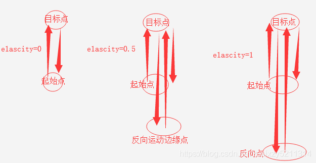
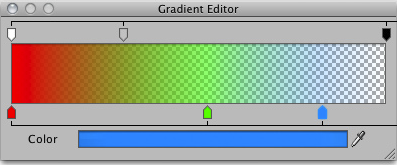

Dotween插件
Dotween篇-01
参考博客
Dotween常用方法详解_蓝天小僧（Andy）的博客-CSDN博客_dotween
主要是这个博客没有目录，同时防止我找不到，我主要是将其复制过来，也会加上一些其他的Dotween API
一、Unity常用组件拓展方法
(1) Transform拓展方法
1）Position
1 | |
2）Rotation
1 | |
3）Scale
1 | |
4）Pauch
1 | |
以position为例，elascity的取值是 0 到 1 的
elascity为0时，物体就在起始点和目标点之间运动
elascity不为0时，会自动计算，产生一个反向点，数值越大方向点离的越远

5）Shake
1 | |
6）Blend
1 | |
(2) Camera拓展方法
1 | |
(3) Material拓展方法
1）改变颜色
material.DOColor(Color.black, 2);
2）按照shader的属性名，修改颜色
material.DOColor(Color.clear, "_Color", 2);
3）修改alpha值
material.DOFade(0, 2);
4）颜色渐变
Gradient是unity的渐变编辑器（下面有渐变编辑器的图）
material.DOGradientColor(Gradient, "_Color", 3);
5）改变材质offset的值
material.DOOffset(new Vector2(1, 1), 2);
6）改变提供的shader属性的名称对应的Vector4值
material.DOVector(new Vector4(0, 0, 0, 1), "_Color", 3);
7）颜色混合
跟位置混合动画同理，可以同时执行而不干扰，产生混合在一起的颜色
material.DOBlendableColor(Color.red, "_Color", 3);
渐变编辑器

(4) Text拓展方法
头三个都是常规方法，不多介绍了
text.DOColor(Color.black, 2);
text.DOFade(0, 2);
text.DOBlendableColor(Color.black, 2);
这个方法比较有意思
是把第一个参数传入的内容按照时间，一个字一个字的输入到文本框中
text.DOText("context", 2);
二、Dotween常用方法
(1) Sequence
Sequence quence = DOTween.Sequence();
1）添加动画到队列中
quence.Append(transform.DOMove(Vector3.one, 2));
2）添加时间间隔
quence.AppendInterval(1);
3）按时间点插入动画
第一个参数为时间，此方法把动画插入到规定的时间点
以这句话为例，它把DORotate动画添加到此队列的0秒时执行，虽然它不是最先添加进队列的
quence.Insert(0, transform.DORotate(new Vector3(0, 90, 0), 1));
4）加入当前动画
Join会加入和让动画与当前正在执行的动画一起执行
如下两行代码，DOMove会和DOScale一起执行
quence.Append(transform.DOScale(new Vector3(2, 2, 2), 2));
quence.Join(transform.DOMove(Vector3.zero, 2));
5）预添加动画
预添加 会直接添加动画到Append的前面，也就是最开始的时候
quence.Prepend(transform.DOScale(Vector3.one * 0.5f, 1));
这里需要特别说一下预添加的执行顺序问题
它这里也采取了队列的性质，不过，预添加与原本的的队列相比是一个反向队列
例如：
Sequence quence = DOTween.Sequence();
quence.Append(transform.DOMove(Vector3.one, 2));
quence.Prepend(transform.DOMove(-Vector3.one*2, 2));
quence.PrependInterval(1);
执行顺序是 PrependInterval----Prepend-----Append
就是最后添加的会在队列的最顶端
6）预添加时间间隔
quence.PrependInterval(1);
回调函数
1）预添加回调
quence.PrependCallback(PreCallBack);
2）在规定的时间点加入回调
quence.InsertCallback(0, InsertCallBack);
3）添加回调
quence.AppendCallback(CallBack);
(2) Tweener（TweenParams）的设置
TweenParams para = new TweenParams();
1）设置动画循环
第一个参数是循环次数 -1代表无限循环
第二个参数是循环方式
Restart 重新开始
Yoyo 从起始点运动到目标点，再从目标点运动回来，这样循环
Incremental 一直向着运动方向运动
para.SetLoops(-1, LoopType.Yoyo);
2）设置参数
transform.DOMove(Vector3.one, 2).SetAs(para);
3)设置自动杀死动画
transform.DOMove(Vector3.one, 1).SetAutoKill(true);
4)from补间
例如;
transform.DOMove(Vector3.one, 2).From(true);
From参数 isRelative(相对的)：
为true，传入的就是偏移量，即当前坐标 + 传入值 = 目标值
为falese，传入的就是目标值，即传入值 = 目标值
5)设置动画延时
transform.DOMove(Vector3.one, 2).SetDelay(1);
6）设置动画运动以速度为基准
例如：
transform.DOMove(Vector3.one, 1).SetSpeedBased();
使用SetSpeedBased时，移动方式就变成以速度为基准
原本表示持续时间的第二个参数，就变成表示速度的参数，每秒移动的单位数
7）设置动画ID
transform.DOMove(Vector3.one, 2).SetId("Id");
8）设置是否可回收
为true的话，动画播放完会被回收，缓存下来，不然播完就直接销毁
transform.DOMove(Vector3.one, 2).SetRecyclable(true);
9）设置动画为增量运动
例如：
transform.DOMove(Vector3.one, 2).SetRelative(true);
SetRelative参数 isRelative(相对的)：
为true，传入的就是偏移量，即当前坐标 + 传入值 = 目标值
为falese，传入的就是目标值，即传入值 = 目标值
10）设置动画的帧函数
例如：
transform.DOMove(Vector3.one, 2).SetUpdate(UpdateType.Normal, true);
第一个参数 UpdateType :选择使用的帧函数
UpdateType.Normal:更新每一帧中更新要求。
UpdateType.Late:在LateUpdate调用期间更新每一帧。
UpdateType.Fixed:使用FixedUpdate调用进行更新。
UpdateType.Manual:通过手动DOTween.ManualUpdate调用进行更新。
第二个参数：为TRUE，则补间将忽略Unity的Time.timeScale
(3) Ease 运动曲线的设置
1）以Ease枚举作为参数
例如：
transform.DOMove(Vector3.one, 2).SetEase(Ease.Flash, 3, 0f);
第二个参数 Amplitude(振幅)：实际就是移动次数，起始点移动到目标算移动一次，再移动回来移动两次
第三个参数 period 值的范围是 - 1~1
值 > 0时，为活动范围的衰减值，活动范围会由大变小
值 = 0时，就是均匀的在起始坐标和目标坐标之间运动
值 < 0时，会施加一个向目标坐标的一个力，活动范围一点点增大，最后逼近目标点
这两个参数只对Flash, InFlash, OutFlash, InOutFlash这四种曲线有用，其他的曲线起作用的就只有Ease枚举参数
2）使用AnimationCurve当作参数
例如：
transform.DOMove(Vector3.one * 2, 1).SetEase(curve);
AnimationCurve 横轴是时间,不过不是具体的时间，而是时间比例
AnimationCurve 纵轴是倍数
假设纵轴的值为v，传入DOMove的第一个参数endValue是e，起始点坐标是s
此物体最后动画结束时的实际坐标即为 v* （e -s）+ s
3）以回调函数为参数
例如：
transform.DOMove(Vector3.one * 2, 1).SetEase(MyEaseFun);
//返回值是运动距离的百分比 值应为0~1之间，最后的值需为1,不然停留的位置不会是目标位置
private float MyEaseFun(float time, float duration, float overshootOrAmplitude, float period)
{
return time / duration;
}
Easing Functions Cheat Sheet (easings.net)查看一些基本曲线的详情
(4) 回调函数
1）动画完成回调
transform.DOMove(Vector3.one, 2).OnComplete(() => { });
2）动画被杀死时回调
transform.DOMove(Vector3.one, 2).OnKill(() => { });
3）动画播放时回调,暂停后重新播放也会调用
transform.DOMove(Vector3.one, 3).OnPlay(() => { });
4）动画暂停时回调
transform.DOMove(Vector3.one, 2).OnPause(() => { });
5）动画回退时回调
以下情况会被调用
使用DORestart重新播放时
使用Rewind倒播动画完成时
使用DOFlip翻转动画完成时
使用DOPlayBackwards反向播放动画完成时
transform.DOMove(Vector3.one, 2).OnRewind(() => { });
6）只在第一次播放动画时调用，在play之前调用
transform.DOMove(Vector3.one, 2).OnStart(() => { });
7）完成单个循环周期时触发
transform.DOMove(Vector3.one, 2).OnStepComplete(() => { });
8）帧回调
transform.DOMove(Vector3.one, 2).OnUpdate(() => { });
9）在路径动画时，改变目标点时的回调，参数为当前目标点的下标
transform.DOMove(Vector3.one, 2).OnWaypointChange((value) => { });
(5) 动画控制方法
1)播放
transform.DOPlay();
2)暂停
transform.DOPause();
3)重播
transform.DORestart();
4)倒播，此方法会直接退回起始点
transform.DORewind();
5)平滑倒播，此方法会按照之前的运动方式从当前位置退回起始点
transform.DOSmoothRewind();
6)杀死动画
transform.DOKill();
7)翻转补间的方向
transform.DOFlip();
8)跳转时间点
第一个参数跳转的时间点，第二个参数是跳转后是否播放动画
transform.DOGoto(1.5f, true);
9）反向播放动画
反向播放动画，在动画播放到一半时执行，会退回起始点，在一开始执行看不到效果是因为，物体本身就在起始点
transform.DOPlayBackwards();
10）正向播放动画
正向播放动画
transform.DOPlayForward();
11）TogglePause
当暂停时，执行就继续播放，播放时，执行就暂停
transform.DOTogglePause();
(6) 获取数据方法
一、类方法
1）返回所有暂停的动画，没有则返回null
DOTween.PausedTweens();
2）返回所有真正播放的动画，没有则返回null
DOTween.PlayingTweens();
3）获取给定ID的数组
例如：
DOTween.TweensById("id", true);
返回满足条件的动画数组
第一个参数是动画的ID
第二个参数是是否只收集正在播放的动画
4）返回给定对象的数组
例如：
DOTween.TweensByTarget(transform, true);
返回满足条件的动画数组
第一个参数是播放动画的对象
例如：transform.DOMove(Vector3.one, 2); 第一个参数就传入transform
material.DOColor(Color.White, 2); 第一个参数就传入材质对象material
第二个参数是是否只收集正在播放的动画
5）收集传入的对象是否有动画在活动
例如：
DOTween.IsTweening(transform);
第一个参数为检测的对象
第二个参数为是否检测动画在播放状态
为true时，给定对象在播放状态时 返回true
为false时，只检测给定对象是否有动画（在pause状态时也算）有则返回true
6）正在播放的动画的总数，目前处于延迟播放状态的动画也算
DOTween.TotalPlayingTweens();
二、实例方法
_tweener = transform.DOMove(Vector3.one, 2)
1）表示动画执行时间的属性，可读可写
_tweener.fullPosition = 1;
2）表示动画执行完的次数
_tweener.CompletedLoops()
3）获取动画的延迟时间
_tweener.Delay();
4）获取动画的持续时间
参数为true 表示计算循环的时间，无限循环为Infinity
_tweener.Duration(false)
5）动画已播放的时间
参数为true 表示计算循环的时间
_tweener.Elapsed()
6）返回动画进度的百分比
起始点为0 目标点为1 当yoyo循环模式下，值会从0变到1再从1变到0
_tweener.ElapsedDirectionalPercentage()
7）返回动画区间已用的百分比
单次循环的数值为0到1
参数为 是否包含循环 为true时 返回值是循环总区间的已用百分比 若为无限循环 返回值为0
_tweener.ElapsedPercentage(true)
8）动画是否在活动
_tweener.IsActive();
9）是否是反向动画
_tweener.IsBackwards();
10）动画是否完成
_tweener.IsComplete();
11）是否以初始化
_tweener.IsInitialized();
12）是否正在播放
_tweener.IsPlaying();
13）返回循环次数， 无限循环为Infinity
_tweener.Loops();
(7) 携程方法
private IEnumerator Wait()
{
_tweener = transform.DOMove(Vector3.one, 2);
1)等待动画执行完
yield return _tweener.WaitForCompletion();
2）等待指定的循环次数
参数为执行次数，等待传入的循环次数后，继续执行
若是传入的次数大于动画的循环次数 则在动画结束时继续执行
yield return _tweener.WaitForElapsedLoops(2);
3）等待动画被杀死
yield return _tweener.WaitForKill();
4）等待动画执行指定时间
参数为时间，动画执行传入的时间之后或动画执行完毕，继续执行
yield return _tweener.WaitForPosition(0.5f);
5）等待动画回退
以下情况会继续执行函数
使用DORestart重新播放时
使用Rewind倒播动画完成时
使用DOFlip翻转动画完成时
使用DOPlayBackwards反向播放动画完成时
yield return _tweener.WaitForRewind();
6）等待Start执行后继续执行
yield return _tweener.WaitForStart();
}
三、Dotween.To()
有些时候，上面的常用API可能满足不了我们的需求，比如UI文本的滚动数字，这个时候可以用Dotween.To()
1 | |
（1）实现数字滚动
1 | |
Dotween插件
http://example.com/2022/12/13/Dotween插件/